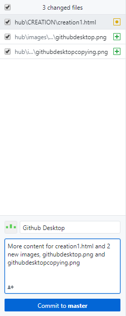
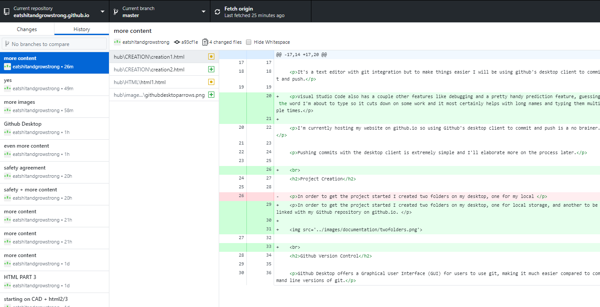

For my text editor, I'm using Microsoft's Visual Studio Code.
It's a text editor with git integration but to make things easier I will be using github's desktop client to commit and push.
Visual Studio Code also has a couple other features like debugging and a pretty handy prediction feature, guessing the word I'm about to type so it cuts down on some work and it most certainly helps with long names and typing them multiple times.
I'm currently hosting my website on github.io so using Github's desktop client to commit and push is a no brainer.
Pushing commits with the desktop client is extremely simple and I'll elaborate more on the process later.
In order to get the project started I created two folders on my desktop, one for local storage, and another to be linked with my Github repository on github.io.
Github Desktop offers a Graphical User Interface (GUI) for users to use git, making it much easier compared to command line versions of git.
Installing Github Desktop is easy,
Going to 'desktop.github.com' and clicking the 'Download for Windows' buttons downloads the Github
I then run the .exe to install it.
A commit, also known as a 'revision', is an individual change to a file. When I make a commit to save my work, Git creates a unique hash that allows records to be kept of the specific changes commited along with other information like who made the commit and the time when they did.
Commits usually also include a commit message, giving more information about the specific commit, for instance, the purpose of the commit.
Pushing means to send the committed changes to my remote repository on Github.com. This is more important in projects with multiple people, local changes once pushed will be able to be seen by other people and edited.
I first copy and paste my entire local folder into the folder linked with my Github repository.
Heading to Github desktop, I see that there has been 3 new changes, there have been additions of content to this webpage, 'creation1'. There are also 2 new images, 'githubdesktop.png' and 'githubdesktopcopying.png'.
I then give the commit a name and brief description.
Once done, Github Desktop notifies me that there is 1 local commit waiting to be pushed to my Github repository.
Clicking either of the 2 push origin buttons results in the Github Desktop pushing my commited changes to my Github repository.
After waiting a while and mashing the F5 key to refresh my Github page, the commited changes will appear on my website.
From the history tab, I can see a history of my recent commits. I also have the option to revert any of the commits that I have made.
This is incredibly important,